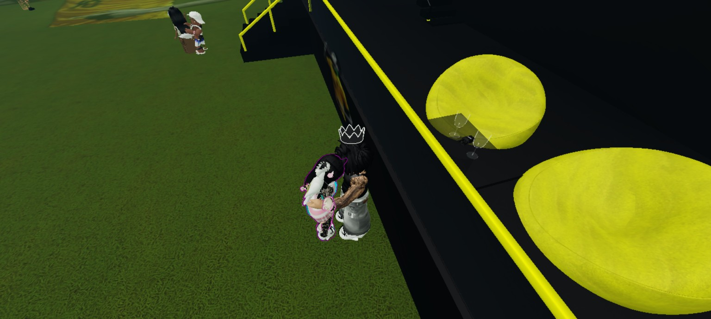

🎮📞❤️ Nossa história em momentos

🎮 Quando a gente jogava junto
Para muita gente é só um jogo, mas para mim eram momentos em que eu sentia você perto. Cada encontro, cada print, cada risada e cada brincadeira viraram lembranças especiais, porque tinham você ali comigo.

📞 Quando eu ouvia sua voz
As ligações sempre tiveram um valor enorme. Às vezes era conversa, às vezes era só presença, mas ouvir sua voz já mudava meu dia. Era como se a distância diminuísse um pouco.

🖤 04/01
Essa data não é só número. É lembrança, volta, aceitação, história e sentimento. É um pedaço nosso que eu guardo porque representa uma fase importante do que a gente viveu.

🤍 Detalhes que lembram você
Tem coisas pequenas que carregam sentimentos enormes. Uma foto, uma pulseira, uma frase, um desenho, uma lembrança simples que vira importante porque tem você no meio.